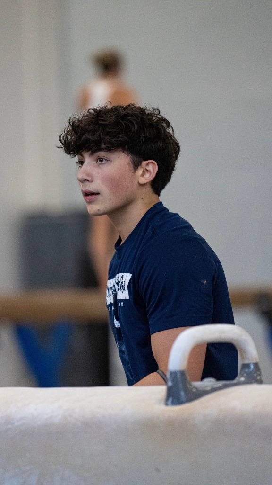
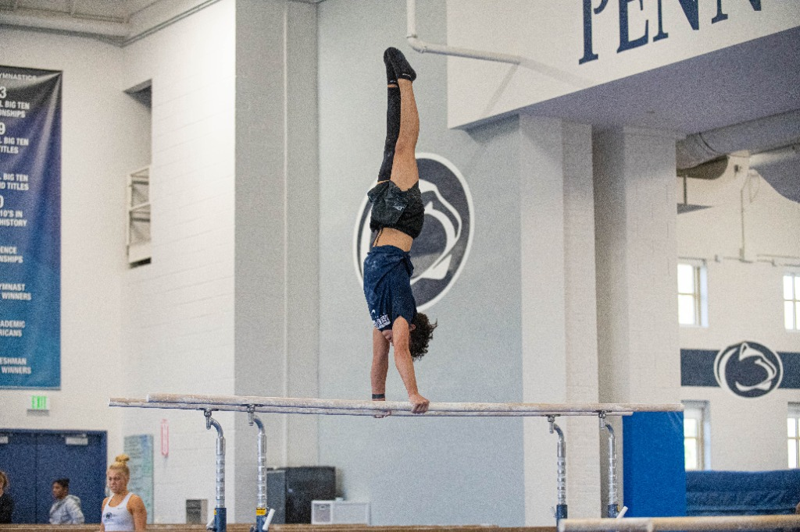
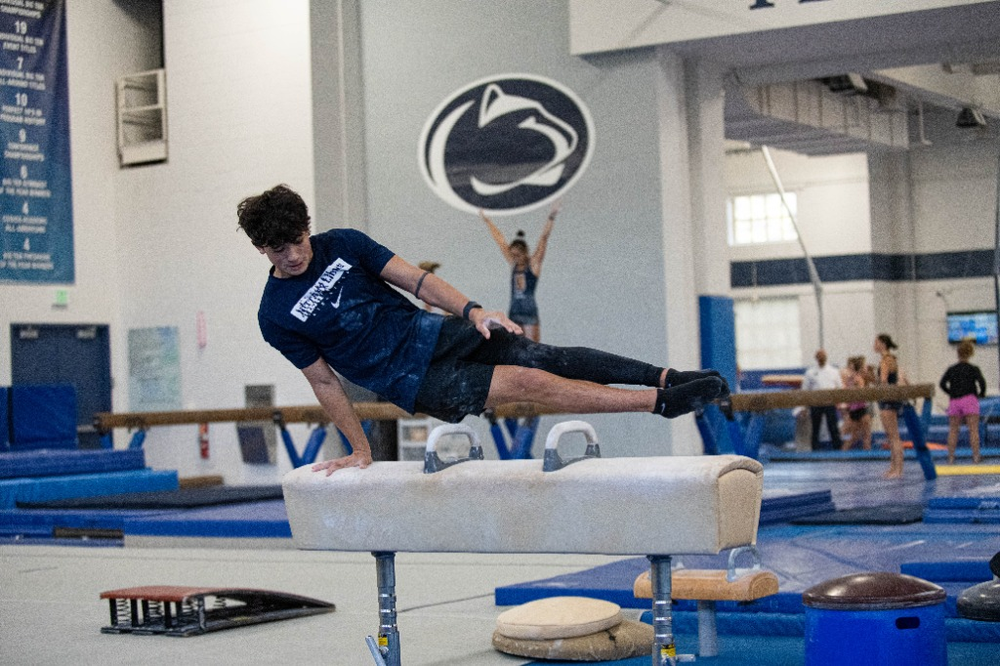
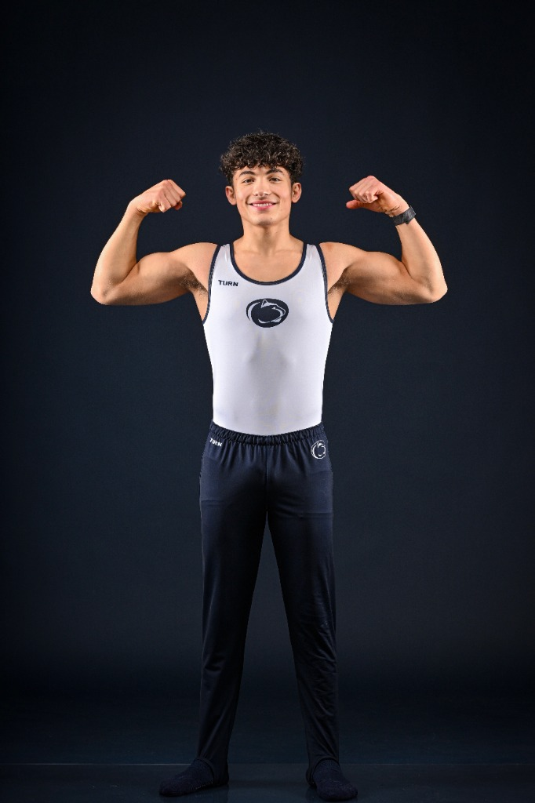

How to Learn a Handstand: Building Control
Learning a handstand is about body position, control, and patience. Many struggle because they treat it like a trick instead of a slow skill...
Read Article →
My name is Robert Alessio Jr. and I am a Division 1 gymnast at Pennsylvania State University. I am majoring in Cybersecurity and have an interest in personal branding. Competing at a high level in gymnastics has taught me a lot about discipline and how to perform even when I am under pressure. On the other hand, the academic side has helped me a lot with problem solving skills and thinking outside of the box.
Aside from athletics and academics, I am also a content creator building a social media that is really centered around my life. Through the content creator process I have developed a lot of skills on how to grow an audience, how to work with national brands, and how to understand marketing.
My goal is to use all of the skills that gymnastics, academics, and content creation has given me to help others be the best they can. This website shows what is important to me and how I can help others through what I have learned.

Learning a handstand is about body position, control, and patience. Many struggle because they treat it like a trick instead of a slow skill...
Read Article →
Performing well is not random; it is a product of good habits and the environment you put yourself in, from the gym to the professional world...
Read Article →
For student athletes, personal branding is essential. It's how opportunities are created and how you show who you are beyond your sport...
Read Article →